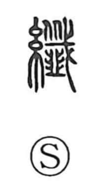

繊

Uncategorized
Kun: | On: sen
fine ・ thin ・ slender ・ fiber
Explanation
Originally written 纖, this is a phono-semantic character: the thread radical sets the scene of spinning and weaving, while the phonetic 籤 supplies the reading sen and an image of extreme fineness. In 籤, Shirakawa sees a pike taking off two heads in succession, a severe motif that underlies the sense found in 殲 “to annihilate.” With the addition of the leek sign 韭, 籤 comes to suggest cutting or mincing something into very small pieces. Placed under the thread radical, that nuance yields 纖: an exceedingly slender strand, and by extension the ideas “fine,” “thin,” and “minute.” Later, 籤 also named the slim bamboo slips used for drawing lots, reinforcing the association with small, delicate pieces.